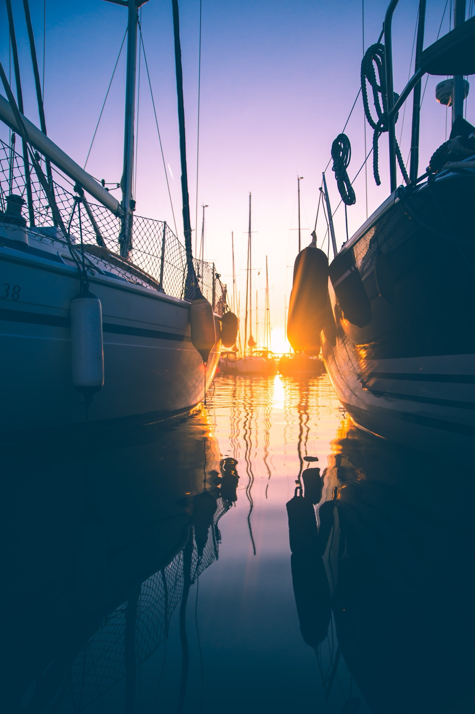

There are moments in life that you replay in your mind for years afterward. A sunset cruise on Boston Harbor is one of them. As the afternoon light softens and the city skyline begins to glow in shades of amber and rose, the water transforms into a mirror of color. The world slows down. Conversation flows more easily. And if you are with someone special, the magic is undeniable.
A private sunset cruise is the most romantic experience available in Boston. It combines the beauty of the natural world with the sophistication of a luxury venue, all set against one of America's most iconic waterfronts. At Atlantis Charter, sunset cruises are our most requested experience - and for very good reason.
What Makes Boston Sunsets Special
Not all sunsets are created equal. Boston benefits from a unique geographic position that creates exceptional sunset viewing from the water. The city faces east-northeast, which means the sun sets behind and beyond the skyline when viewed from the harbor. This creates stunning silhouette effects as buildings, bridges, and church steeples are backlit by warm light.
The harbor's position also means that on clear evenings, the sky puts on a show that lasts well beyond the moment the sun drops below the horizon. The afterglow can paint the sky in violets, deep oranges, and soft pinks for 30-45 minutes after sunset. This extended golden hour gives you ample time to soak in the views, take photographs, and simply be present with the people you care about.
Water amplifies everything. The reflection of sunset colors on the harbor surface doubles the visual impact. Light scattered through atmospheric moisture creates soft, diffused illumination that makes everything - and everyone - look beautiful. Photographers and cinematographers know this effect well. On a yacht, you experience it in all directions.

The Perfect Sunset Cruise Itinerary
Our captains have refined the ideal sunset route over thousands of cruises. Here is what a typical 3-hour private sunset charter looks like:
Departure (T+0)
Board at the marina approximately 2.5 hours before sunset. Your captain and crew welcome you aboard with chilled champagne or your beverage of choice. A brief orientation covers the yacht layout and amenities.
Harbor Cruise (T+15 to T+60)
The yacht cruises through the Inner Harbor, passing the historic waterfront, the Seaport District, and the USS Constitution. The late afternoon light is warm and inviting, perfect for settling in with a drink and enjoying the views. If you have arranged for dinner, a first course or appetizers are served during this portion.
The Golden Hour (T+60 to T+120)
Your captain positions the yacht for optimal sunset viewing, typically near Castle Island or the outer harbor. This is the centerpiece of the experience. The sky transforms minute by minute as the sun descends. For couples, this is the moment - for proposals, toasts, or simply holding hands in silence as nature performs.
As the last light fades, the city skyline transitions from warm tones to glittering lights. The contrast between the deep blue sky and the illuminated buildings is extraordinary. The main course is served as you take in this transformation.
City Lights Return (T+120 to T+180)
The return cruise passes through the illuminated harbor. The Zakim Bridge, Custom House Tower, and waterfront buildings create a spectacular night-time panorama. Dessert and after-dinner drinks complete the evening as the yacht glides back to the marina.
Romantic Touches That Make the Difference
A sunset cruise is inherently romantic, but thoughtful touches elevate it from wonderful to extraordinary. Here are enhancements that our guests love:
- Champagne and oysters: Begin with a half-dozen fresh oysters and a glass of vintage champagne as the yacht departs. Simple, elegant, and perfectly suited to the setting.
- Private chef dinner: Our partner chefs prepare multi-course meals aboard the yacht using locally sourced ingredients. Imagine pan-seared scallops, lobster risotto, and a chocolate soufle served as the skyline glitters behind you.
- Rose petals and candles: Floral arrangements and battery-operated candles create soft, romantic ambiance throughout the yacht. Our events team handles setup before you arrive.
- Live music: A solo guitarist, violinist, or jazz vocalist adds a soundtrack to the evening. The music drifts across the water and creates an atmosphere that is impossible to replicate on land.
- Professional photography: Capture the evening with a photographer who specializes in yacht events. The golden-hour portraits from a sunset cruise are frame-worthy.
- Personalized details: Custom menus with your names, a special bottle of wine, or a dessert with a message - small touches that show thought and care.
Best Months for Sunset Cruises in Boston
While sunset cruises are available throughout our charter season (May-October), the timing and character of the experience varies by month:
- May-June: Sunset occurs between 8:00 and 8:25 PM. Long evenings allow for leisurely departures. The air is fresh and temperatures are comfortable (65-75 degrees F). Spring blooms on the harbor islands add color.
- July-August: Peak sunset beauty. Sunset times range from 7:45 to 8:20 PM. Warm evenings (75-85 degrees F) are perfect for open-deck dining. These months book fastest, so reserve 4-6 weeks in advance.
- September: Many captains say September produces the most spectacular sunsets. Cooler air creates sharper light, and the changing leaves along the harbor begin to show autumn color. Sunset around 7:00 PM.
- October: Dramatic skies and vibrant fall foliage create a completely different mood. Sunset around 6:00 PM allows for earlier departures. Bring a warm layer for the deck.
Sunset Cruise for Special Occasions
Proposals
A sunset yacht charter is one of the most popular proposal settings in Boston. We work discreetly with partners planning proposals to choreograph the perfect moment - from hiding champagne until the ring is presented to coordinating with photographers positioned on shore or aboard the yacht. Our crew has participated in hundreds of proposals and knows how to create the moment without giving away the surprise.
Anniversaries
Whether it is your first or fiftieth anniversary, a sunset cruise creates an evening of reconnection and celebration. The intimate setting, beautiful scenery, and unhurried pace make it ideal for couples who want quality time together without the distractions of a busy restaurant.
Date Night
Elevate a regular date night into something unforgettable. A smaller yacht for two (plus captain) creates an exclusive experience that signals effort and thoughtfulness. It is the kind of gesture that deepens a relationship.
For our complete guide to chartering a private vessel, see our ultimate yacht charter guide. If you are planning a larger romantic celebration, our party planning guide has you covered.
Book Your Sunset Cruise
Create an evening you'll remember forever. Our team will help you plan every golden detail.
Plan Your Evening